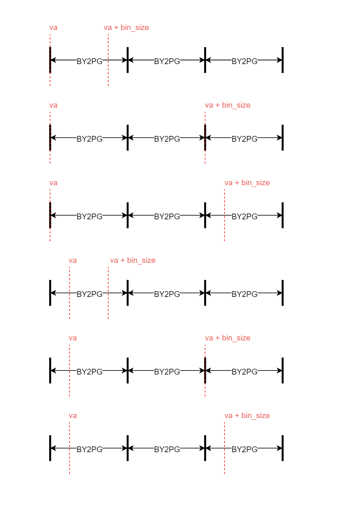
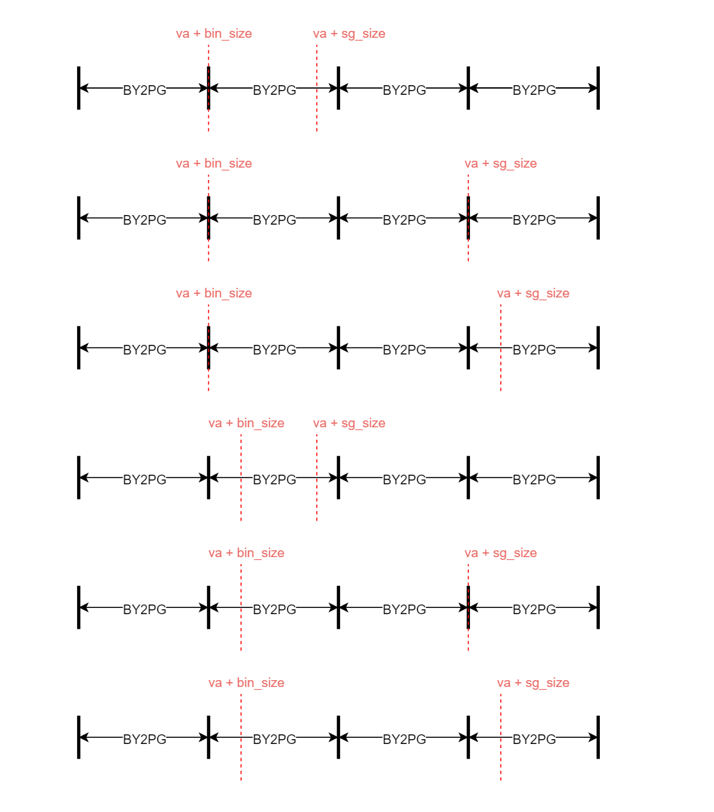
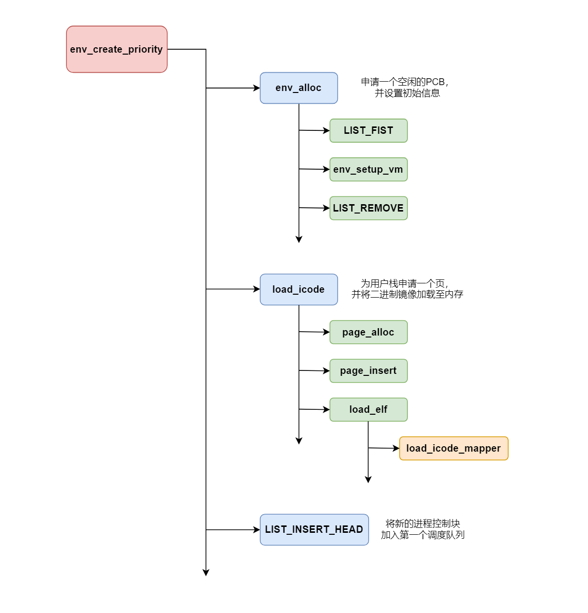
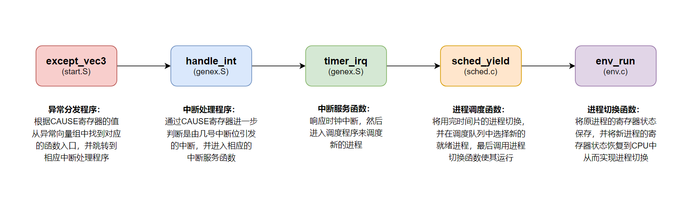
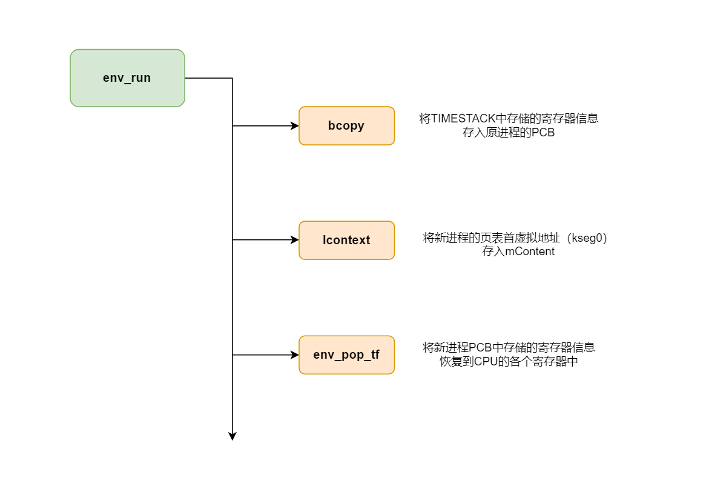

Lab3 实验报告
实验思考题
Thinking 3.1
Q： 思考envid2env 函数:为什么envid2env中需要判断e->env_id != envid 的情况？如果没有这步判断会发生什么情况？
A： 通过阅读该函数的代码，我们能知道，e是根据envid的后10位从envs数组中获得的。
1 | int envid2env(u_int envid, struct Env **penv, int checkperm) |
但是这样获得的e的envid不一定和envid相同，因为envid中还有ASID字段（11-16位），当envs中的某一个进程控制块被替换，新生成的envid的后10不变，但是ASID字段会改变。所以我们需要进一步判断e->env_id != envid是否成立。
如果不判断，则通过最终获得的e可能并不是我们想要的内存控制块，而如果对这个错误的内存控制块操作，则可能会导致内存控制出现混乱（例如获得一个仍在env_free_list中的PCB，然后运行它）。
Thinking 3.2
Q： 结合include/mmu.h 中的地址空间布局，思考env_setup_vm 函数：
UTOP和ULIM的含义分别是什么，UTOP和ULIM之间的区域与UTOP以下的区域相比有什么区别？- 请结合系统自映射机制解释代码中
pgdir[PDX(UVPT)]=env_cr3的含义。 - 谈谈自己对进程中物理地址和虚拟地址的理解。
A：
-
ULIM是kseg0和kuseg的分界线，也是内核态虚拟内存区和用户态虚拟内存区的分界线；UTOP是kuseg中只读区和可读写区的分界线。UTOP和ULIM之间是只读区域，用来存放用户的进程信息和页表信息；UTOP之下的是可读写区域，用户可以自由读写。 -
UVPT是kuseg中保存用户（当前进程）页表信息的虚拟内存区，大小为4MB（0x7fc00000-0x80000000），env_cr3是进程页目录所在的物理地址。pgdir[PDX(UVPT)]=env_cr3表示页目录中第PDX(UVPT)项映射到页目录本身的物理地址，实现自映射机制。 -
在用户进程中使用的是虚拟地址（用户可见），然后MMU通过查询页表得到对应的物理地址（用户不可见），并最终通过物理地址在物理内存中获取值。
Thinking 3.3
Q： 找到 user_data 这一参数的来源，思考它的作用。没有这个参数可不可以？为什么？（可以尝试说明实际的应用场景，举一个实际的库中的例子）
A： user_data 在 load_elf 和 load_icode_mapper 两个函数中用到。
1 | //env.c |
不可以没有这个参数，因为在load_elf函数中需要进一步将这个参数传递给函数指针map（实际上指向的是load_icode_mapper）。
Thinking 3.4
Q： 结合load_icode_mapper 的参数以及二进制镜像的大小，考虑该函数可能会面临哪几种复制的情况？你是否都考虑到了？
A： va和va+bin_size的相对位置有以下6种

va+bin_size和va+sg_size的相对位置有以下6种

Thinking 3.5
Q： 思考上面这一段话，并根据自己在lab2 中的理解，回答：
- 你认为这里的
env_tf.pc存储的是物理地址还是虚拟地址? - 你觉得
entry_point其值对于每个进程是否一样？该如何理解这种统一或不同？
A： env_tf.pc中存储的是虚拟地址。对于每个用户进程来说entry_point都是一样的（如果不手动进行设置的话），这样可使让程序的每次执行都从一个固定的虚拟地址开始，这种统一对CPU是友好的。
Thinking 3.6
Q： 请查阅相关资料解释，上面提到的epc是什么？为什么要将env_tf.pc设置为epc呢？
A： epc是CP0中的一个寄存器（14号），用于保存使该进程出现异常（包括中断）时指令所在的pc。进程因异常被切换时将env_tf.pc设置为epc，实际上就是保存了“该进程运行到了什么地方”。这样就可以使进程在下一次被调度时，直接从上次出现异常的位置继续向后运行。
Thinking 3.7
Q： 关于 TIMESTACK，请思考以下问题：
- 操作系统在何时将什么内容存到了
TIMESTACK区域 TIMESTACK和env_asm.S中所定义的KERNEL_SP的含义有何不同
A： 操作系统在发生时钟中断时时将原进程的env_tf中的内容保存到TIMESTACK区域（在handle_int函数中通过SAVE_ALL实现）。 TIMESTACK时发生时钟中断时的栈顶指针，KERNEL_SP是发生其他中断时的栈顶指针。
Thinking 3.8
Q： 试找出上述 4 个异常处理函数的具体实现位置
A： handle_int和handle_sys的实现位置比较容易找到，前者在genex.S文件中，后者在syscall.S文件中。而handle_mod和handle_tlb藏得比较深，两者都是通过genex.S文件中的宏函数BUILD_HANDLER实现的。
1 | #宏函数 |
Thinking 3.9
Q： 阅读 kclock_asm.S 和 genex.S 两个文件，并尝试说出 set_timer 和 timer_irq 函数中每行汇编代码的作用
A： set_time函数的分析如下
1 | .macro setup_c0_status set clr |
time_irq函数的分析如下
1 | timer_irq: |
Thinking 3.10
Q： 阅读相关代码，思考操作系统是怎么根据时钟周期切换进程的。
A： env_sched_list有两个链表存放就绪进程。当进程被创建时，我们将其插入第一个进程调度链表的头部。调用 sched_yield 函数时, 先判断当前时间片是否用完。如果用完，则将其插入另一个链表的结尾，之后判断当前就绪状态进程链表是否为空。如果为空, 将指针切换到另一个就绪状态进程链表。最后从指针指向的链表的头部获取一个就绪进程进行切换。
实验难点图示
我认为该实验的难点在于理解进程的创建流程、时钟中断的处理流程和进程的切换流程。
进程创建流程

时钟中断的处理流程

进程切换流程

体会与感想
Lab3要求我们实现进程的创建、切换和调度，其中进程的调度主要是通过设置异常处理机制来实现。
本次实验的难度比Lab2稍稍低一些，主要原因是本次lab中各个函数之间的联系比较紧密。虽然某些复杂函数理解起来还是有些困难，但是如果在宏观上把握这些函数的关系，那么对于单个函数的理解就变得相对容易了。
所以，在阅读复杂工程的代码时，不要急于阅读每一个函数的细节，而是应该首先搞清楚工程的文件结构（by makefile）和不同函数之间的关系（by doc），然后再按照一定的逻辑顺序阅读代码，这样就可以达到事半功倍的效果。
If you like this blog or find it useful for you, you are welcome to comment on it. You are also welcome to share this blog, so that more people can participate in it. If the images used in the blog infringe your copyright, please contact the author to delete them. Thank you !